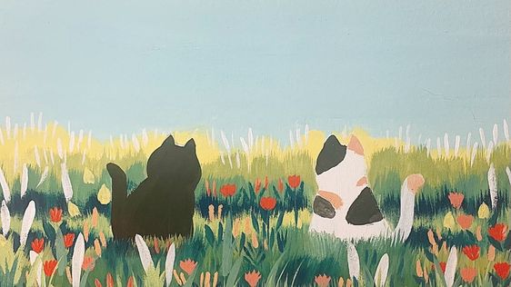

Portifólio de Matemática
~ Introdução ~
Nesse portfolio abordarei a matemática financeira, progressões aritméticas, progressões geométricas e estatística, conteúdos estudados na disciplina de matemática no decorrer no ultimo trimestre. Esses conteúdos se apresentam de diversas formas e estão presentes no dia-a-dia das pessoas.
Os conteúdos estudados apresentam relevância na vida de qualquer cidadão independente de sua classe social, são conteúdos importantes para nossa vida enquanto estudantes pois certamente serão cobrados no ENEM e também em concursos, porém também são importantes no decorrer de nossa vida pois se apresentam em diferentes contextos e é de fundamental importância possuir conhecimento a cerca desses conteúdos para melhor usufruir desses conhecimentos ao longo da vida.

Fonte: Pinterest.com
Feito por Letícia Berlanda.
•Professores: Valeria Espínola Lessa e Ernani Gottardo.
•Disciplinas: Matemática e Desenvolvimento de Web.
•Curso: Técnico em Informática Integrado ao Ensino Médio.
•Turma: 1º ano/ 2021.